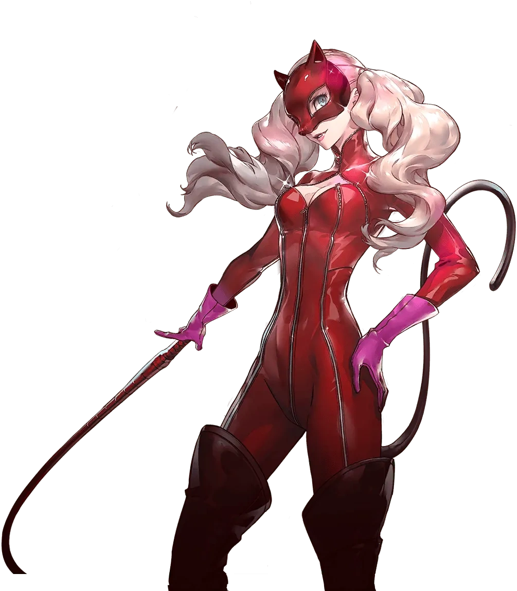

Introduction
Ann Takamaki is the fourth character that you unlock in Persona 5 Royal and is the first female character that you unlock. She is also the first person Ren encounters that is from the Phantom Theives.
Persona Unlocking
Ann unleashes her Persona the third time we enter the metaverse and enter the castle. She was held captive by Kamoshida Joker, Skull, and Mona overhear this happening and go to save her. However, like Ryuji, she unlocks her Persona while the others are ambushed by enemies.
Gallery
Carmen
Panther(apperence in metaverse)
Ann Takamaki

Facts about Ann Takamaki
- Code Name: Panther
- DOB(date of birth): November 12, 1999
- Age: 17
- Height: 165 cm (5'5")
- Primary Tool: Whips
- Secondary Tool: Submachine Guns
- Arcana(personality): Lovers
- Persona(asssistant): Carmen